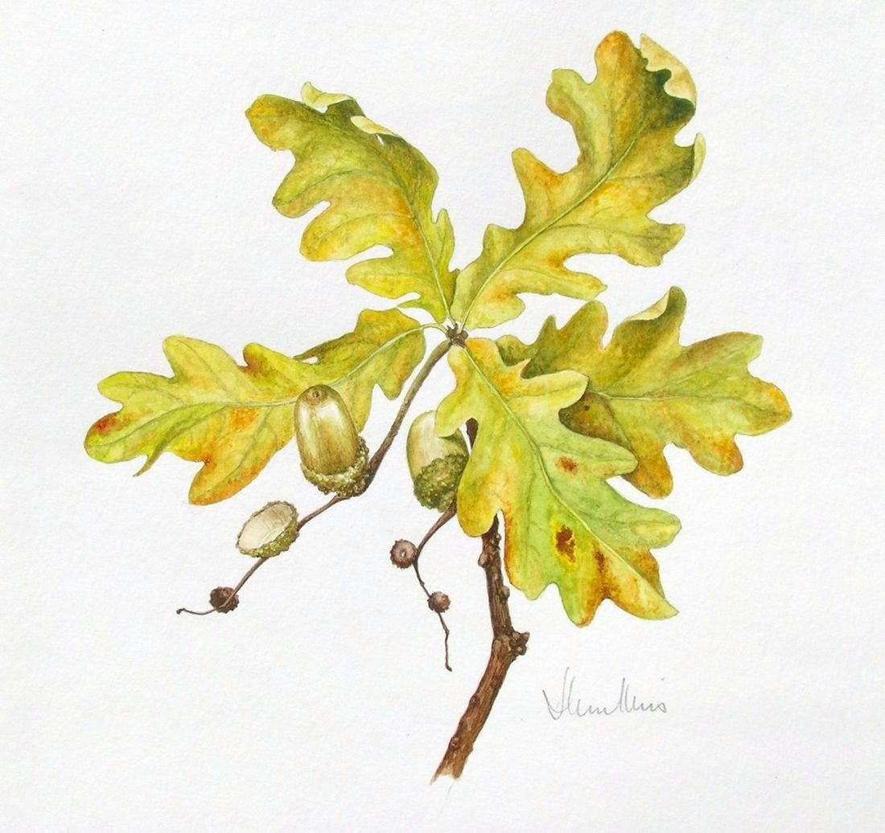

The two remaining acorns
No. 189- Medium
- Watercolour on paper
- Size
- 23 × 21 cm
- Year
- 2012
- Price
- Price on request
[A few lines from Joan about this painting]
Ask about this paintingOr email enquiries@joanmullinsart.co.uk, quoting No. 189. UK only. Collection from Nantwich is free; UK postage is quoted when you enquire.
 White roses against a blue background
White roses against a blue background Zantedeschia
Zantedeschia